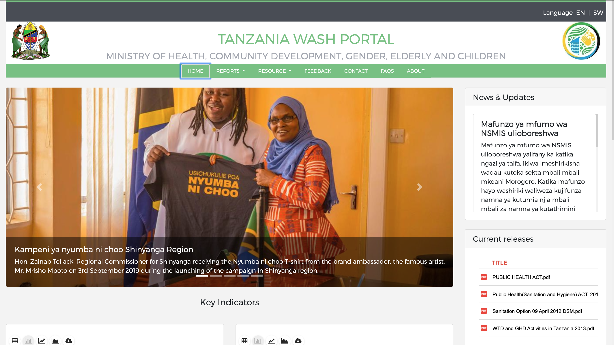
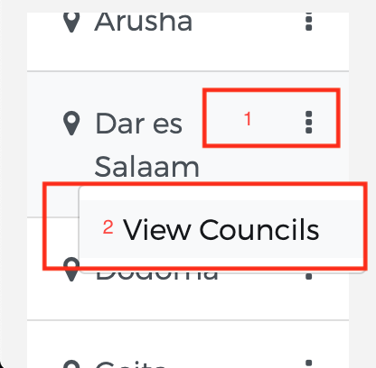

MINISTRY OF HEALTH, COMMUNITY DEVELOPMENT, GENDER, ELDERLY AND CHILDREN
Welcome to NSMIS portal training
The National Sanitation Management Information System (NSMIS) for Tanzania was developed to address the historical challenge of collection and storage of household and institutional WASH (Water, Sanitation and Hygiene) data. The Ministry of Health, Community Development, Gender, Elderly and Children (MoHCDGEC) in collaboration with partners made a stance decision to ensure data for WASH is stored and made accessible at all times and help in making informed decisions in the sector. The NSMIS is developed on the dhis.2 (District Health Information System 2) software and can run on all Operating Systems including Windows, Linux, Mac OSX and Solaris. It is also compatible with all major web browsers and can run on all computers.
NSMIS background
Although the NSMIS is under the MoHCDGEC it is intended to be used by anyone interested in data on WASH in the country. The system pulls data from the primary collection level (the sub-villages) and aggregate at different levels i.e. village, ward, council, region and national. The use of NSMIS started in 2014-2015 being piloted in selected regions namely; Njombe, Mbeya, Iringa, Dodoma, Dar es Salaam, Kilimanjaro, Kigoma, Rukwa and Ruvuma. Afterwards rolled out across the country, in July, 2017 the ministry ordered all the councils and regions to report the progress on implementation of the National Sanitation Campaign (NSC) through NSMIS. Since then, all the progress reports are delivered from the system making it easier to report and also track the trend systematically. Today data is collected on a quarterly basis through registers. The data from the registers are put into the NSMIS at X level
Key features and purpose of the NSMIS
The NSMIS has been instrumental in facilitating timely reporting and sharing of data to stakeholders whenever they are needed. This makes it possible to routinely track the progress to Sustainable Development Goal number 6.2 (SDG 6.2) on safely managed sanitation services and accelerates national efforts to increase access to safely managed sanitation like basic hygiene facilities in household, institutions, and public places, as well as the elimination of open defecation.
The introduction of web portal has ended the era of using credentials to enable someone to access the information. It is our sincere hope that, partners and the public in general will find the NSMIS and its web portal very helpful for decision making, planning, implementation and monitoring of sanitation and hygiene in the country. Previously data from the NSMIS was only accessible through the MoHCDGEC private website.
The system is live and will be updated periodically based on software upgrades, user needs and preferences, and MoHCDGEC policy changes.
Through the web portal, users will be able to access public water and sanitation data, create online reports using data from the village, ward, council, region or national level, download water and sanitation data, and access up-to-date Ministry resources.
Technical background
DHIS 2 can be perceived as a platform on several levels. First, the application database is designed ground-up with flexibility in mind. Data structures such as data elements, organisation units, forms and user roles can be defined completely freely through the application user interface. This makes it possible for the system to be adapted to a multitude of locale contexts and use-cases. We have seen that DHIS 2 supports most major requirements for routine data capture and analysis emerging in country implementations. It also makes it possible for DHIS 2 to serve as management system for domains such as logistics, labs and finance.
Second, due to the modular design of DHIS 2 it can be extended with additional software modules or through custom apps. These software modules/apps can live side by side with the core modules of DHIS 2 and can be integrated into the DHIS 2 portal and menu system. This is a powerful feature as it makes it possible to extend the system with extra functionality when needed, typically for country specific requirements as earlier pointed out.
The downside of the software module extensibility is that it puts several constraints on the development process. The developers creating the extra functionality are limited to the DHIS 2 technology in terms of programming language and software frameworks, in addition to the constraints put on the design of modules by the DHIS 2 portal solution. Also, these modules must be included in the DHIS 2 software when the software is built and deployed on the web server, not dynamically during run-time In order to overcome these limitations and achieve a looser coupling between the DHIS service layer and additional software artifacts, a REST-based API has been developed as part of DHIS 2.
This Web API complies with the rules of the REST architectural style. This implies that:
The Web API provides a navigable and machine-readable interface to the complete DHIS 2 data model. For instance, one can access the full list of data elements, then navigate using the provided URL to a particular data element of interest, then navigate using the provided URL to the list of data sets which the data element is a member of.
(Meta) Data is accessed through a uniform interface (URLs) using plain HTTP requests. There are no fancy transport formats or protocols involved - just the well-tested, well-understood HTTP protocol which is the main building block of the Web today. This implies that third-party developers can develop software using the DHIS 2 data model and data without knowing the DHIS 2specific technology or complying with the DHIS 2 design constraints.
All data including meta-data, reports, maps and charts, known as resources in REST terminology, can be retrieved in most of the popular representation formats of the Web of today, such as XML, JSON, PDF and PNG. These formats are widely supported in applications and programming languages and gives third-party developers a wide range of implementation options.
System requirements
The NSMIS Portal is a tool developed with Bootstrap framework, which makes it compatible with most browsers currently on the market.
Windows
MAC OSX
LINUX
iOS
Android
Windows Mobile
Chrome
Yes > 42
Yes > 42
Yes > 42
Firefox
Yes > 37
Yes > 37
Yes > 37
Safari
Yes > 8
Opera
Yes > 29
Yes > 29
Yes > 29
Internet Explorer
Yes > 10
iOS Safari
Yes > 8
Android Chrome
Yes > 42
Android Firefox
Yes > 37
Internet Explorer Mobile
Yes > 10
Step 1. Open the browser and access the portal
Remember that to access the NSMIS portal you must have an internet connection, you can also do it from your cell phone, although the display will not be the most appropriate due to size issues.
Place the URL https://nsmis.moh.go.tz/nsmisportal/ to access the portal, if you cannot access it, contact the administrator at email: XXXXXX @ .com to see if there is a technical problem in the availability of it.
*After loading, the NSMIS portal will be displayed on the Main Screen.
Step 2. Exploring the contents of the home page
Upon entering the portal you can see the content of the homepage, which will provide information such as recent news, general graphics of quality indicators, information on the latest product launches related to the NSMIS among others.
The main screen consists of two sections:
1) Informative section: contains news of interest and updates of the portal.

2) Indicators section: it is a quick view of the main indicators.
*A short look at the Main Screen.
Step 3. Explore the portal menu
The portal menu gives you several options:
HOME: This link will always take you to the beginning of the portal, when you want to start an exploration of it again, you can click on it and you can start from scratch.
REPORTS: The reports is the section where you can explore the data associated with indicators at the level of departments, wards and districts. On the left you can see by default it has a 4-bar chart with the last 4 most recent periods (quarters). On the right is the description of the indicator with the data of both the numerator and the enumerator of the graph.
RESOURCE: This page will provide you with a series of resources such as Case studies, Photos, Policy & Guidelines, Presentations, Publications, Tools and Trainings.
FEEDBACK: Here users can share comments about the portal as well as observations or applications made with the information.
CONTACT: Show our address and email.
FAQS: Shows some frequently asked questions that users ask when using the portal, we recommend reading them to learn more about it.
ABOUT: This page provides information about this product and its managers.
*The main menu is located at the bottom of the portal header.
Step 4. Available resources
The NSMIS portal contains a wide variety of resources to enrich data or news to users.
*Accessing the resource menu.
Step 4.1 Publications
To find news or publications, you can find the news option in the resources menu. These are in
PDF format which makes it easy to obtain them from any device.
Step 4.2 Tools
Like the publications, the tools section is found within the resources menu, in this way it will show us a list with the content you want to use.
Step 4.3 Training
In NSMIS portal we have a training section in which you will find the guideline. If you wish to obtain the guideline, you can obtain it by placing yourself in the "guideline" resources section.
Step 4.4 Presentations
In the resources section you can find presentations that you can use for the interactive understanding of the content you find in the NSMIS portal.
Step 4.5 Photos
Get access to the photo gallery of NSMIS portal, this is located within the resources section in the photo section
Step 4.6 Case studies
You can find recently studied cases, all in downloadable versions
Step 4.6 Policy & guidelines
You can find policy and guidelines within the resources of NSMIS portal.
Step 4.7 Download
You can find policy and guidelines within the resources of NSMIS portal.
Step 5. How to create reports
The portal offers the option to visualize several indicators.
In the main menu identify the REPORTS option and then click.
*Accessing the indicators.
Step 5.1 Indicators view
The indicator view contains sections to interact with the data.
1)Indicator Group.
It's a container of indicators grouped by categories in common.
2)Indicator List.
Display a list of indicators.
3)Regions.
A container to filter by regions.
4)Indicator Data.
It shows a graphic visualization of the indicator and the description of the data.
Step 5.2 Available indicators
About indicators
An indicator is a specific, observable and measurable characteristic that can be used to show the changes and progress that a program is making towards the achievement of a specific result.
The NSMIS portal contains 23 indicators that can be quickly located in the report’s menu, not all of them allow visualizing data, this is because there is no data available to be able to be visualized, to the extent that the MoH works in the collection of information, the reports of the missing indicators can be visualized.
Dashboard indicators (5)
Access to improved sanitation
Percent of households with functional hand washing and soap
Number of Villages / Mtaa declared ODF
Percent of households without toilets
Percent of households treating drinking
Food Safety at Ward Level (6)
Food Safety Percentage of registered premises rendering food services
Food Safety Percentage of cases due to food borne diseases
Food Safety Percentage of deaths due to food borne diseases
Food Safety Percentage of premises rendering food services inspected
Food Safety Percentage of medically examined food handlers
Food Safety Percentage No food practicing HACCP in a Council
House Condition (3)
House Condition Percentage of Houses Built with permanent floor in the village / mtaa
House Condition Percentage of Houses Built with permanent non-leaking roof in the village / mtaa
House Condition Percentage of Houses Built with durable walls in the village / mtaa
Human Resource Management (5)
Human Resource Management Percentage of Enrrolled EHP
Human Resource Management Percentage of wards with EHP
Human Resource Management Percentage of licensed EHP
Human Resource Management Percentage of Registed EHP
Human Resource Management Percentage of Enlisted EHP
Occupational Health and Safety (4)
Occupational Health and Safety Percentage of workers received preventive medical checkups
Occupational Health and Safety Percentage of informal sectors workers covered with health insurance scheme
Occupational Health and Safety Percentage of healthcare workers received PEP
Occupational Health and Safety Percentage of workplaces inspected for compliance in occupational health and safety
Port Health Services (7)
Port Food Safety Percentage of imported solid food seized
Port Health Services Percentage of travelers screened of international notifiable disease
Port Health Services Percentage of travelers arriving from affected areas
Port Health Services Percentage of travelers coming from Yellow fever affected areas
Port Health Services Percentage of departed travelers received yellow fever vaccine
Port Health Services Percentage of arrived travelers received yellow fever vaccine
Port E_ Total Number of Point of Entry (PoE)
Sanitation and Hygiene (9)
Sanitation and Hygiene Percentage of households with functional hand washing and soap
Sanitation and Hygiene Percentage Households with Basic Toilets
Sanitation and Hygiene Percentage Households with Safely Managed Toilets
Sanitation and Hygiene Percentage of households with improved toilets
Sanitation and Hygiene Percentage of households without toilets
Sanitation and Hygiene Percentage of Villages/Mtaa declared ODF
Sanitation and Hygiene Total Number of Villages
Sanitation and Hygiene Number of village/mtaa declared ODF
Water Safety Percentage of Households treating drinking water
School Wash for Primary (9)
School Wash Percentage of primary schools with changing room for girls
School Wash I Percentage of primary schools with improved sanitation facility
School Wash Percentage of primary schools with durable functional hand washing facility and soap
School Wash Percentage of primary schools with sanitation facilities for pupils with disabilities for girls
School Wash Percentage of primary schools without sanitation facility
School Wash Percentage of primary schools with improved toilet at a drop hole ratio of 1:50 for boys
School Wash Percentage of primary schools with improved toilet at a drop hole ratio of 1:40 for girls
School Wash Percentage of primary schools with reliable safe water supply
School Wash Percentage of primary schools with sanitation facilities for pupils with disabilities for boys
School Wash for Secondary (6)
School Wash Percentage of secondary schools with functional hand washing facility
School Wash Percentage of secondary schools with improved sanitation facility
School Wash Percentage of secondary schools with durable functional hand washing facility and soap
School Wash Percentage of secondary schools with reliable safe water supply
School Wash Percentage of secondary schools with improved toilet at a drop hole ratio of 1:50 for boys
School Wash Percentage of secondary schools with improved toilet at a drop hole ratio of 1:40 for girls
Wash and Healthcare Waste Management (5)
Wash and Healthcare Waste Management Percentage of Healthcare facilities with standard functional incinerator
Wash and Healthcare Waste Management Percentage of Healthcare facilities with improved toilets at a ratio of 1 :20 and 1:25 for female and male respectively
Wash and Healthcare Waste Management Percentage of healthcare facilities with placenta pits
Wash and Healthcare Waste Management Percentage of Healthcare facilities with functional hand washing points with soap
Wash and Healthcare Waste Management Percentage of Healthcare facilities with adequate water supply as per WASH Guidlines
Waste Management at Ward (6)
Percentage of Councils with landfill
Percentage of Councils with wastewater treatment facilities
Percentage of Municipals and Cities with facilities for treatment of faecal sludge
Percentage of Wards receiving solid waste collection services
Number of registered vehicles for colletion of faecal sludge in the council
Number of Small and Medium scale Enterprises (SME) providing faecal sludge collection services in the council
Water Safety (2)
Water Safety Percentage of Households treating drinking water
Water Safety Percentage of households with designated container (bucket/pot) for safe storage of drinking water
Step 5.3 Description of the indicators, numerator and denominator.
Dashboard indicators (5)
Access to improved sanitation
Description
Number of households with improved toilets divided by the total number of households Note: Improved toilets can be Type B - improved pit latrine; Type C - ventilated improved latrine; Type D - water closet latrine; or Type E - ecological latrine
Numerator
Number of household with improved toilets
Denominator
Total number of Households in a Village
Percent of households with functional hand washing and soap
Description
Percent of households with functional hand washing and soap divide by Number of Households
Numerator
Number of households with functional hand washing and soap
Denominator
Number of Households
Number of Villages / Mtaa declared ODF
Description
Number of villages/mtaa declared open defecation free (ODF)
Numerator
Number of Villages/Mtaa declared ODF
Percent of households without toilets
Description
Number of households without a toilet divided by total number of households
Numerator
Number of households without toilets
Denominator
Total number of Households
Percent of households treating drinking
Description
Number of households treating drinking water divided by total number of households
Numerator
Number of households treating drinking water
Denominator
Number of Households
Human Resource Management (5)
Human Resource Management Percentage of Enrrolled EHP
Human Resource Management Percentage of wards with EHP
Description
Human Resource Management Percentage of licensed EHP
Description
Human Resource Management Percentage of Registed EHP
Description
Human Resource Management Percentage of Enlisted EHP
Description
Step 5.4 Definition of specific Locations
You can select a state, district or ward to display the indicators of that specific location.
Methods to select a specific location:
1) You can type the name of the region in the search bar that is within the region group.
2) By clicking on the submenu of regions (1) and then selecting the View Councils (2) option, this will provide an additional menu where you can select each district.

Step 5.5 Definition of the temporality of the data
The information is displayed by quarters of the year (J, F, M, A, M, J, J, A, S, O, N, D), you can select more according to the availability of the period.
Select either specific rooms or entire years.
The existing data in the database will be displayed.
Step 5.6 Visualizing the data
The indicators can be displayed in many ways, by selecting the type of view at the top of the indicator container we can select between tables, bar graphs and linear
Step 5.7 Export the graphics
An important part for the user is to obtain information from the site and take it with them when it is offline, in the NSMIS portal indicators there is the option to download them in 3 different formats: Image, CSV and PDF, this for portability and / or need of the user.
The button is placed at the top of each indicator.
Step 6. Contact the NSMIS team
How to feedback?
In the NSMIS portal it is important the feedback from the users, for that reason we have a contact form.
In the main menu identify the feedback option.
Enter our name, email, address, telephone and message content.